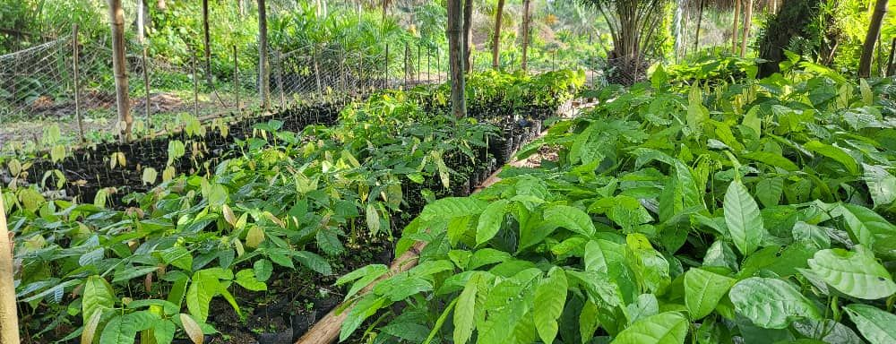
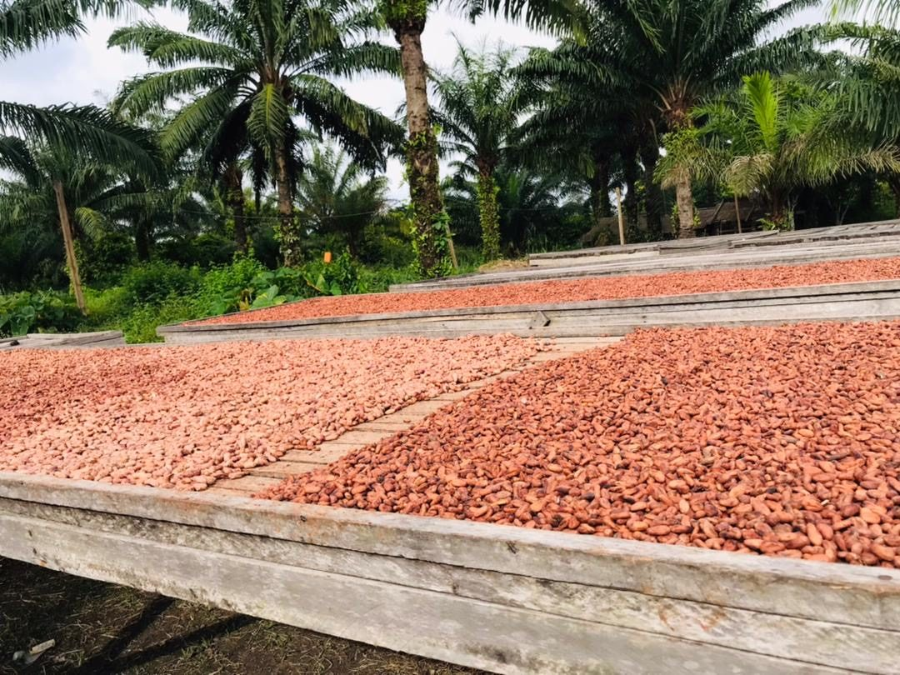
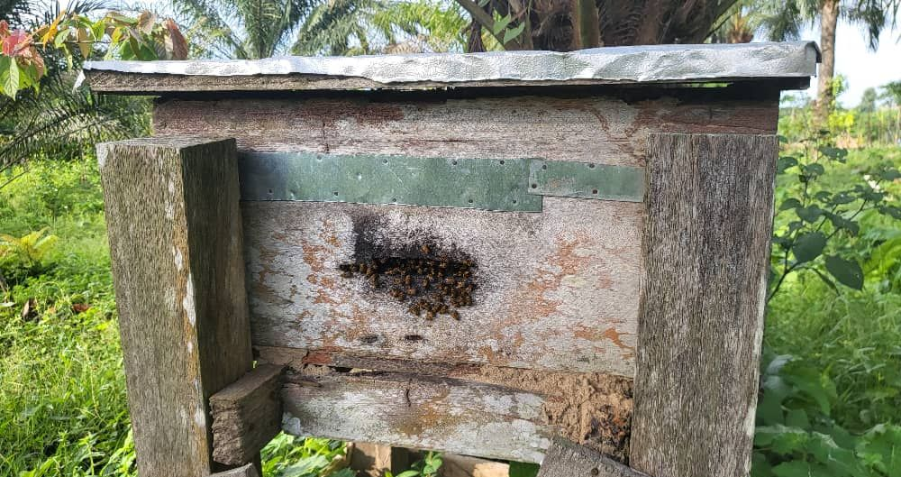
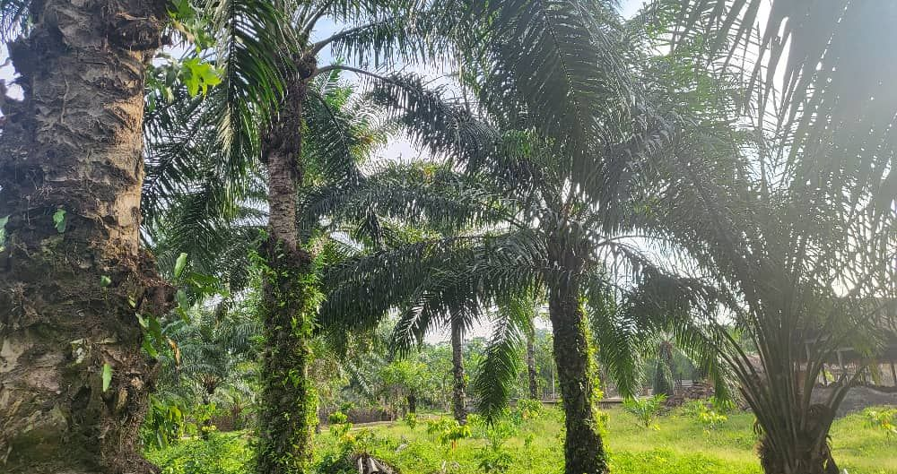

Une exploitation agricole
à Ibenga, depuis 2006.
Ce que nous sommes, ce que nous faisons, et ce que nous refusons de faire. Vingt saisons dans un seul village.
Nous plantons, nous récoltons, nous pressons, nous séchons. Puis nous chargeons la pirogue. Tout ce qui porte notre nom est passé par nos mains.
Nous ne promettons pas des tonnes que nous n'avons pas. Nous disons ce que la saison donne, et quand.
Ce que nous faisons, et pas.
Ce que vous pouvez attendre de nous, et ce que vous n'obtiendrez pas.
✓Ce que nous faisons
- Cultiver sept culturesPalmier, cacao, safou, miel, ananas, maïs, légumes
- Transformer sur placeHuile, cacao, miel
- Vendre en directSans intermédiaire
- RecevoirVisites et formations
✕Ce que nous ne faisons pas
- Acheter pour revendreRien ne vient d'ailleurs
- Promettre un volume sans récolteLa saison décide
- Mélanger les originesUne terre, un nom
- Affirmer ce qu'on ne sait pasOn préfère le dire
Vingt ans, en cinq dates.
Seule la fondation est établie. Les autres jalons sont à fournir par l'exploitation, ils remplacent les emplacements ci-dessous.
- 2006
Fondation de l'exploitation à Ibenga, district d'Enyellé.
- [ année ]
Premières plantations de cacao. Date et surface à fournir.
- [ année ]
Mise en service de l'atelier de pressage. À confirmer.
- [ année ]
Premiers ruchers, première récolte de miel. À confirmer.
- [ année ]
Première expédition hors du département. Destination à fournir.
Les gestes de l'exploitation.
Ici, on montre le travail plutôt que les visages. Trois gestes qui reviennent à chaque saison.

Élever les plants
Les jeunes cacaoyers et les jeunes palmiers grandissent en sachets, à la pépinière, avant de rejoindre la plantation.

Sécher le cacao
Les fèves de cacao sèchent au soleil sur des claies en bois, installées sous les palmiers.

Conduire les ruchers
Des ruches en bois sont posées en lisière et sous les arbres. Les abeilles y font le miel de l'exploitation.

Ce que nous sommes, en quelques repères.
Pas de chiffre que nous ne pourrions pas prouver : seulement ce qui se voit sur place.